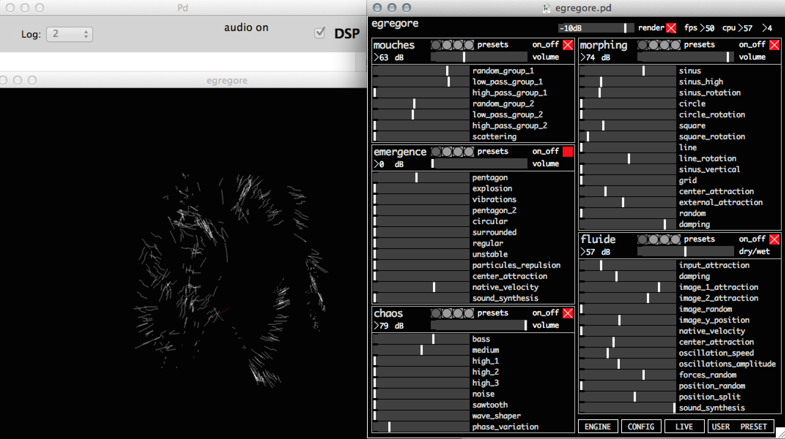
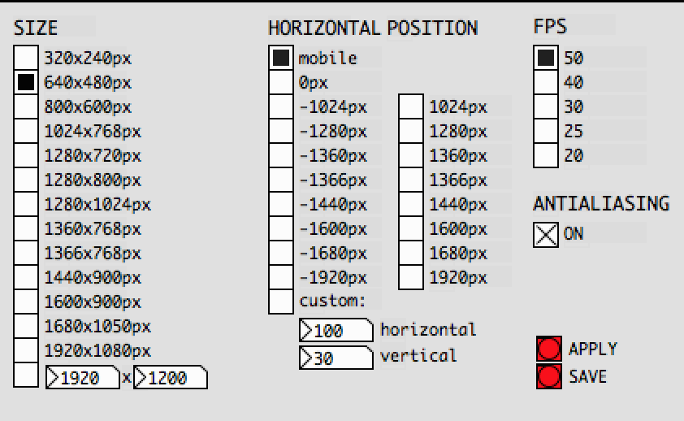
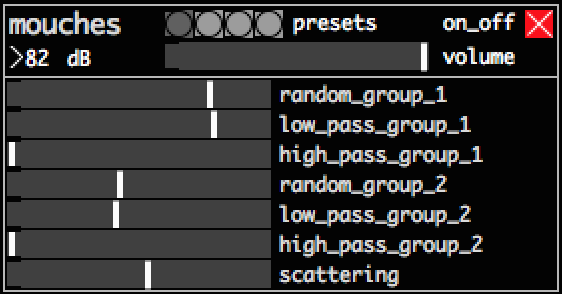
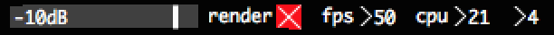
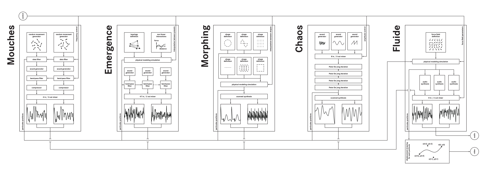

EGREGORE SOURCE - USER MANUAL
* authors: chdh
* last version: www.chdh.net/egregore_source_manual.htm
* date: 2015-06-23
* version: 2.0
This document present egregore source, an adaptation of the software used by chdh for the performance egregore in 2011-2013. It is based on five different audiovisual instruments made of chaotic and physical modeling algorithms that you can directly control. They have been remotely controlled live by chdh the 27th may 2015.
TABLE OF CONTENTS
1.INTRODUCTION
2.INSTALLATION & RUN
3.INTERFACE
4.LIVE PERFORMANCE
5.ARCHITECTURE
6.INFORMATIONS FOR PURE DATA USERS
7.TROUBLESHOOTING
8.LINKS
1. INTRODUCTION
ÉGRÉGORE
Egrégore is originally an audiovisual performance realized in 2011 that exploits group movement phenomenas. Complex and expressive behaviors are generated and controlled by a computer and transcribed in sound and image. A crowd of particles deploys itself, reorganizes, blends into living structures more or less coherent, evolving from a chaotic movement towards a cohesive group.
SOURCE
Egregore - source is an edition that aims to archive and document the performance: all the elements in égrégore - optimized for a standard personal computer - are supplied: the instrument created for the performance, the software that enabled the creation of the performance and a document of usage, all under a free license and with source code. A digital version is freely downloadable on the P2P networks and a usb key with all this data will as well be available.
DISTRIBUTED PERFORMANCE
These instruments have been remotely controlled by chdh for a one time only performance the 27th May 2015. The distribution of the code allowed to use this "physical" dispersion as a new performance vector. The different personal computers used to decode the contents of the key, geographically distributed around the world, united to each other by internet constitute the "stage" where took place this last representation of égrégore. The software allows anyone to replay this performance.
2.INSTALLATION & RUN
HARDWARE REQUIREMENTS
This patch should run on any computer with average performance since 2011.
* CPU : a minimum of 2 core is mandatory. Intel core 2 duo 2GHz is a minimum
* Graphic card : Intel HD 4000 works. Most ATI or NVIDIA GPU since 2010 should work.
INSTALLATION
Installation prerequisites:
The software needed depends of your operating system and its version.
* Linux : Pure Data version >= 0.43 and Gem version >= 0.93.3 have to be installed on your computer.
If you are on a Debian based system (Ubuntu, Mint, ...), you can run "sudo apt-get install puredata".
Otherwise the easiest way to get both is to download Pd-extended, see: http://puredata.info/downloads/pd-extended
* OSX from 10.5 to 10.8 : Nothing have to be installed.
* OSX 10.9-10.10 : You may need to install Xquartz. Launch the software and follow the indications.
* Windows XP / Vista / seven / 8 : Nothing have to be installed.
Egregore - source installation:
* From the usb key, you don't need to install the software, go directly to the run section.
* From a download on Internet, you can find the last version at : http://www.chdh.net/egregore_source.php.
Then uncompress the file and move the directory where you want on your computer (Windows user: don't use the "Program Files folder).
RUN
* Linux : Quit all applications producing sound (Firefox, VLC, ...). Go in A.Egregore_software directory and double-click on egregore_source.sh. If that doesn't work, you can:
- change your preferences (see here)
- or open a terminal, drag and drop the file inside it, and press enter.
* OSX : Go in A.Egregore_software directory and double-click on egregore_source.app
* Windows : Go in A.Egregore_software directory and double-click on egregore_source.bat
3.INTERFACE

VIDEO CONFIGURATION
|

| |
You can adjust the video settings by clicking on the [video] button. This section allows the control of the rendering window size and position amongst some others parameters:
* size : size of the rendering window in pixels.
* position : position of the rendering window. Use mobile if you don't need fullscreen. If you want to display the rendering on another screen, be careful of the position of the second screen compared to the principal. For example if your main screen is 1280x720 pixels and your second screen is 1920x1080 pixels positioned on the left, you should use an offset of -1920px and a size of 1920x1080 to have fullscreen on the left screen.
* fps : frame per second of the rendering. If your computer is not powerful enough, you can decrease it.
* antialiasing : antialiasing increase image quality but increase computation time.
* apply : apply the selected settings now.
* save : save the settings. They will be used at next launch.
If you want to reset the settings, see troubleshooting.
|
SOUND CONFIGURATION
You may need to configure your sound output. To do that click on the "media->audio settings" menu and choose your sound output. See Pd documentation for more informations.
MIDI CONFIGURATION
To configure your midi interface, click on the "media->MIDI settings" menu and choose your midi input. See Pd documentation for more informations.
You can assign your midi faders to any parameter:
* click on the [midi] button
* check the "midi learn" toggle
* move a parameter with the mouse
* move a fader on your midi device
* You can repeat the "move a parameter with mouse, move a fader" sequence to assign other parameters
* uncheck the "midi learn" toggle
If needed you can reset your settings by clicking the "reset midi assignations" button
CONTROLLING THE INSTRUMENTS
The software is divided in five instruments: mouches, morphing, chaos, emergence and fluid. You can control each one of these instruments separately:
|

| |
* on/off : turn on/off this instrument. Turn off unused instrument to save CPU.
* presets : click to recall some predefined preset. The first preset set the instrument in a state where it did not produce movement.
* xx dB : output sound level of this instrument.
* volume : adjust the visual and sound volume of this instrument.
* faders : controls of the instrument. Each one of this parameter modify the state of the algorithm and thus the sound and video generated. Move these faders to play with the instrument.
|
INSTRUMENTS DESCRIPTION
Mouches
Mouches (flies in french) is a simple mix of noise and random movements. Every particle movement is random and independent. The sound is based on noise generators. The control are divided in two groups of flies.
* random group n : amplitude of random
* low pass group n : property of the random generator
* high pass group n : property of the random generator
* scattering : visual dispersion
Emergence
In emergence, every particle is connected to all the others. The modification of the link between them creates emerging complex structures. Sound synthesis is based on the speed and displacement of particules.
* pentagon, explosion, ...., unstable : different kind of connection between particules
* native velocity : increase the base speed of particles
* sound synthesis : mix between three sound synthesis engine
Chaos
Chaos is based on the Peter de Jong strange attractors family. The input of this attractor is a mix of different simple sound synthesizers. A few iterations of the attractors are computed for each of this sound samples, resulting in tables that are directly seen as sound and particule positions.
* bass, medium, ..., sawtooth : sound at the entrance of the attractor
* wave shaper : effect on the input sound
* phase variation : movement variation velocity
Morphing
Morphing is defined by a set of 377 mobile particles attached to different shape composed by 377 points: circle, square, .... The user can modify the rigidity between the mobile particle and each one of these shapes, resulting in mixed and unstable forms. The particule positions tables are directly read as sounds.
* sinus, square, ... grid : attraction to each shape
* random : add a random position
* damping : modification of the "resistance" of the environment
Fluide
Fluide is more an effect than a proper instrument. It takes as an input the position of the particules of the other instrument and "throw" them like bowls in a 3d topology. The sound is based on the particules displacments.
* input attraction : influence of the other instruments particules position
* damping : resistance of the environment
* image n attraction : influence of the 3d topology
* sound synthesis : mix between three sound synthesis engine
MONITORING
On the top right, you have info about the state of your computer:

* -10dB : master volume. Increase or decrease as needed.
* render : turn off the rendering if needed (sound + video).
* fps : frame per second. It should stay at 50, otherwise try to reduce the value in [config]. Use 40 or 30 for example.
* cpu : percent of usage of the two cpus. It should not go beyond 90% or you risk to have audio drop-out (clicks).
OTHER BUTTONS
* User Preset : Here you can store and recall the state of all the instruments. When a preset is empty, it is displayed dark.
* Live : Informations and control about the live performance. cf. live
* Engine : Here you can see the Pure Data patch running egregore_source. cf. pd users
4.LIVE PERFORMANCE
These instruments have been remotely controlled by chdh for a one time only performance the 27th may 2015. Around 120 computers from 23 countries were connected in real time. The performance control data are now included in the software.
Click on the [live] button bottom right of the interface to open the replay GUI. Click [play] to read the control data. You can navigate in the performance using the horizontal slider. Unclick the [play] button to pause the playback and manipulates the instruments.
5.ARCHITECTURE
DESCRIPTION
In egregore source, there is 377 particules. Each particule is controlled by the five instruments, the resulting movement is the sum of the displacements generated by all the instruments. These instruments are mostly based on physical modeling and chaotic equations algorithms, resulting in expressive and pseudo naturals behaviors. The instruments play on the relationship between the particules: some of them used totally independent generators for each element, and some connect all the particules together.
The rendering window shows only the particules movement: for each particule, a curve is drawn between its actual position and its three precedent position, resulting in a big curve when the particule is moving fast and nothing if the particule is static.
Each instrument has a specific sound synthesis engine. Each synthesizer is designed to represent at best the movement of the particules.
ALGORITHM MAP

6.INFORMATIONS FOR PURE DATA USERS
You can use any part of this instrument for yourself. The application is build in Pd 0.46.2. To open the engine layer, click on the [engine] button. Here you can edit, copy and paste in other Pd patchs.
There should be no conflict with existing pd installation. Startup script should start pd with it's own preference file, and do not overwrite preferences.
The main patch is composed of several parts:
* instruments : create sound and movements for 377 particules.
* bus : add the sound and position generated by all instruments.
* local server : manage the control parameters.
* interface : display the interface and send data to the local server.
* render : displays the particules displacements.
* internet reception : manage the data from Internet for live performance.
7.TROUBLESHOOTING
* If you have problem with your video settings and can't launch the application anymore, you can delete the config.txt file in the src folder. A new one with basic value will be generated.
* There is a known problem in some version of Gem/Ubuntu where the window can't recreate itself. This doesn't allow you to easily modify the video settings. To do that, choose your settings, click save and relaunch the software.
* If you have another Linux distribution than Ubuntu, you may need to recompile the sources. To do that do
$ cd $PATH/egregore_source_X.X/src/lib
$ make
* If the main window is displayed twice on osx 10.6+, you my need to protect the application saved state. To do that, open a terminal and type:
defaults write org.puredata NSQuitAlwaysKeepsWindows -int 0
defaults write org.puredata.pd.wish NSQuitAlwaysKeepsWindows -int 0
8.LINKS
Visit the chdh website to have news and infos
http://www.chdh.net